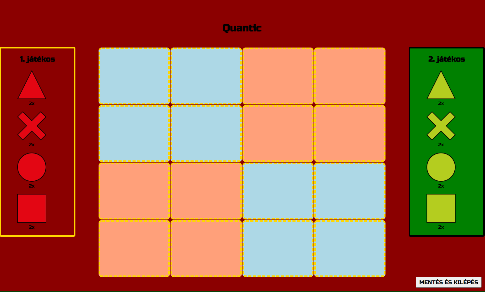
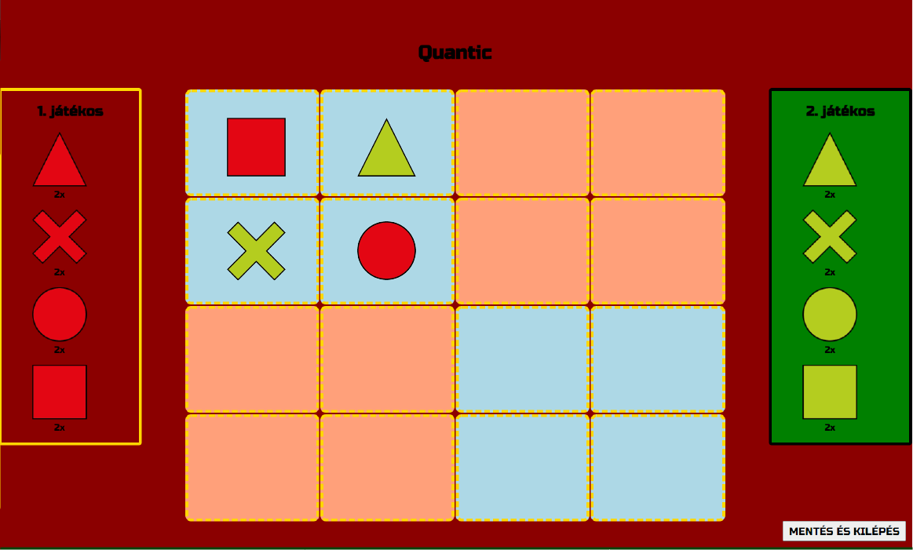
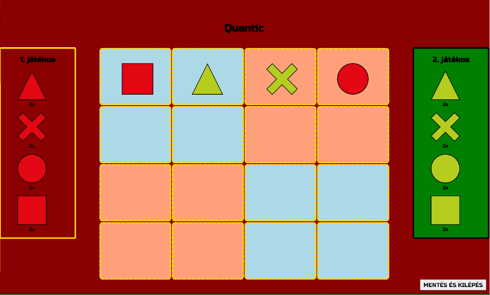

A játék egy 4x4-es táblán játszódik, ami 4 egyenlő, 2x2-es részre van bontva. A játékhoz négy, egymástól könnyen megkülönböztethető, alakzatot használhatunk, jelen esetben négyzetet, kört, háromszöget és X-et. Mind a két játékosnak minden alakzatból 2-2 bábuja van, így összesen 8 alakzat található meg egy színből. A játék célja az, hogy elsőként helyezzék le a játékosok a negyedik, többitől különböző formát egy sorba, oszlopba, vagy négyzet alakú területre (színtől függetlenül). Ha egy cellára lehelyeztünk egy alakzatot, akkor annak sorába, oszlopába, vagy négyzet alakú területére nem tudja már egyik játékos sem még egyszer ugyanazt az alakzatot letenni.

Mivel a színek nem számítanak, nyerhetünk csupán úgy is, hogy mind a három másik alakzatot a másik játékos tette le, mi pedig a negyedik bábut helyeztük le.

Ebben a játékban a piros játékos helyezte le a piros kört a második sorban, így a jobb felső területre az utolsó hiányzó darab is felkerült, és megnyerte a játékot.

A piros játékos rakta le utoljára a piros kört az első sorban, így lehelyezve a hiányzó alakzatot abban a sorban, és megnyerte a játékot.
Kiegészítés:A játék folyamán a háttér színe jelzi, hogy melyik játékos következik, illetve a soron következő játékos bábúinak a területe körül a szegély aranyszínűre vált. Amikor a játékos valamely bábúját a pályára szeretné helyezni, akkor a bábúra kell kattintania (ekkor egy arany szegéllyel kijelölődik a válaszott bábú), majd a táblának a játékos számára megfelelő, szabad mezőjére (szaggatott aranyszegéllyel ellátottak) kell kattintania. Abban az esetben, ha a játékos a úgy dönt másik bábút helyezne le és még nem helyezte le a jelenleg kiválasztottat, elég csak a másik bábúra kattintania. A játék végén egy kis ablakban felugrik a játék végeredménye, és gombra kattintva lehet visszatérni a főmenübe.